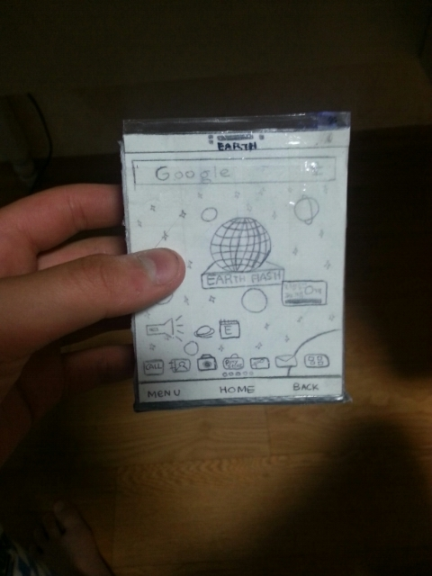

2013
When smartphones first emerged, I couldn’t afford one as a
student and often felt left behind watching others explore new
technology that connected people in ways I couldn’t.

Click Me!
Out of curiosity, I built a simple
smartphone mock-up using circuits and LEDs to
simulate its glow. That early experiment sparked my lifelong
interest in how technology bridges people, leading me to
start a tech blog that has since grown to over
650K views.